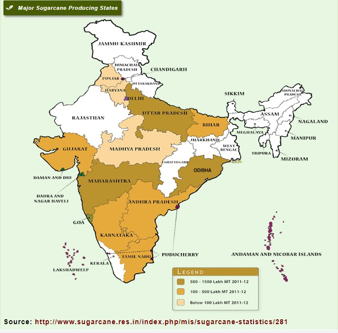

Sugarcane
About Sugarcane
Sugarcane (Saccharum officinarum), belonging to the Gramineae (Poaceae) family, holds a prominent position as a widely cultivated crop in India. Its cultivation offers employment opportunities to more than a million individuals, both directly and indirectly, while also making a significant contribution to the country's economic resources. The geographic range for sugarcane cultivation spans between the latitudes 36.7° north and 31.0° south of the equator. This expansive zone covers areas ranging from tropical to subtropical climates.
>The origins of sugarcane can be traced back to New Guinea, where its existence has been documented for millennia. Over time, sugarcane propagated along human migration routes, gradually spreading to regions such as Asia and the Indian subcontinent. In these regions, natural cross-breeding occurred between cultivated sugarcane and certain wild relatives of the plant. This intricate process eventually gave rise to the contemporary commercial sugarcane varieties that are familiar today.
The practice of cultivating sugarcane in India traces back to the Vedic period, with the earliest references to its cultivation found in Indian texts dating between 1400 and 1000 B.C. It is now widely acknowledged that India serves as the original homeland of the Saccharum species. Within this context, Saccharum barberi and the Polynesian group of islands, particularly New Guinea, are identified as the primary centers of origin for S. officinarum. Classified within the Gramineae (Poaceae) family, sugarcane belongs to the monocotyledon class and the glumaceae order, with a subfamily designation of panicoidae, tribe Andropogoneae, and subtribe saccharininea.
The cultivated sugarcane varieties can be classified into two primary
groups:
(a) The first group comprises the slender and resilient North Indian
types, specifically S. barberi and S.
sinense.
(b) The second group consists of the voluminous and succulent noble
canes, known as Saccharum officinarum.
Among these, the most
esteemed variety is S. officinarum.
Important regions/ zones for sugarcane cultivation in India
Sugarcane cultivation in India can be categorized into two primary
agro-climatic regions: tropical and
subtropical. Nevertheless, for the
purpose of varietal development, five distinct agro-climatic zones
have
been recognized. These zones are as follows:
- North Western Zone
- North Central Zone
- North Eastern Zone
- Peninsular Zone
- Coastal Zone
In the country, the tropical region contributes approximately 45% of the total sugarcane area and 55% of the production. The average productivity for this region during the year 2011-12 was around 77 t/ha. On the other hand, the sub-tropical region encompasses about 55% of the total sugarcane area and 45% of the production, with an average productivity of roughly 63 t/ha during the same period.
Tropical Sugarcane region
The tropical sugarcane region encompasses sugarcane agro-climatic zones 4 (peninsular zone) and 5 (coastal zone), covering the states of Maharashtra, Andhra Pradesh, Tamil Nadu, Karnataka, Gujarat, Madhya Pradesh, Goa, Pondicherry, and Kerala.
The sub-tropical sugarcane region constitutes approximately 55 percent of the total cane area in the country. This region encompasses states such as U.P, Bihar, Haryana, and Punjab. Regarding crop distribution, sugarcane-growing nations across the globe are situated within the latitude range of 36.70 degrees north and 31.00 degrees south of the equator. These regions extend from tropical to sub-tropical zones. In India, sugarcane cultivation is widespread, spanning from latitude 80 N to 330 N, excluding cold hilly areas such as Kashmir Valley, Himachal Pradesh, and Arunachal Pradesh.
Climatic requirement
Sugarcane undergoes distinct critical stages including germination, tillering, early growth, active growth, and elongation. The ideal temperature range for the sprouting process (germination) of stem cuttings falls between 32°C and 38°C. Germination is impeded below 25°C and attains a stable phase between 30°C and 34°C. Elevated temperatures exceeding 38°C hinder photosynthesis while promoting respiration.Conversely, during the ripening phase, lower temperatures ranging from 12°C to 14°C are considered favorable.
Reduction in yield of sugarcane due to rise in temperature
Sugarcane's yield and the quality of its juice are significantly shaped by the prevailing weather conditions during distinct growth phases. Optimal sugar recovery occurs when the climate is dry and humidity is low. Abundant sunshine, cooler nights with substantial day-night temperature differences, and minimal rainfall during the ripening period contribute to the highest sugar accumulation. These factors collectively enhance sugar content.
However, extreme weather conditions, such as very high or very low temperatures, can negatively impact juice quality and subsequently affect sugar quality. Warm and humid climates, while favorable for the crop, can also promote the proliferation of insect pests and diseases. This can lead to substantial damage to the quality and yield of sugarcane juice, ultimately impacting sucrose levels.
Area, production and yield of sugarcane in major growing states
Within the tropical zone, Maharashtra stands out as a prominent sugarcane cultivation state, encompassing approximately 9.4 lakh hectares of land and yielding a production of 61.32 million tons. Meanwhile, Tamil Nadu holds the distinction of achieving the highest productivity in the tropical zone. In the sub-tropical zone, Uttar Pradesh takes the lead as the largest sugarcane producer, with an area spanning about 22.77 lakh hectares and yielding a cane production of 135.64 million tons. Notably, Haryana boasts the highest sugarcane productivity within the sub-tropical zone.
